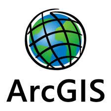

Geomatics Engineering Skill Scorecard
Python
Basic programming, data analysis, and automation skills.
QGIS
Vector/Raster analysis, mapping, and data visualization expertise.
Netcad
Usage in precise cadastral operations and local engineering projects.
Agisoft Metashape
High-level experience in photogrammetry and 3D modeling projects.

ArcGIS
Enterprise GIS solutions, geographic database management.